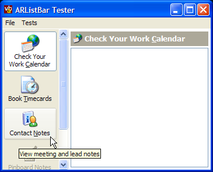
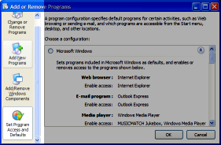
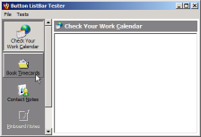

VB5 Button ListBar Control (27K)
VB5 Button ListBar Control (27K)
 VB5 Button ListBar Demonstration (68K)
VB5 Button ListBar Demonstration (68K)
 VB5 Button ListBar Full Source (123K)
VB5 Button ListBar Full Source (123K)
 VB6 Button ListBar Control (27K)
VB6 Button ListBar Control (27K)
 VB6 Button ListBar Demonstration (66K)
VB6 Button ListBar Demonstration (66K)
 VB6 Button ListBar Full Source (121K)
VB6 Button ListBar Full Source (121K)
 5 Jul 2003
5 Jul 2003
Fixed bug with icons not drawing when using VB6 MSCOMCTL.OCX ImageList
Added Mouse Wheel support. Thanks to Chris Eastwood at vbCode Library for the suggestion.
 Displaying Alpha (32bit) Icons with ImageLists
Displaying Alpha (32bit) Icons with ImageLists
 vbAccelerator COM/VB Support Type Library (vbaCOM.Tlb)
vbAccelerator COM/VB Support Type Library (vbaCOM.Tlb)
 Subclassing Without The Crashes
Subclassing Without The Crashes
 Visual Basic Project Zip Utility
Visual Basic Project Zip Utility
 vbAccelerator ImageList Control and Class v2.0
vbAccelerator ImageList Control and Class v2.0
 Adding Scroll Bars to Forms, PictureBoxes and User Controls
Adding Scroll Bars to Forms, PictureBoxes and User Controls

Button ListBar Control
The Button ListBar control provides an emulation of the ListBar provided in the Windows Add/Remove Programs window. Under XP it uses the UxTheme API to draw parts of the toolbar, and degrades to use standard GDI drawing calls when used on earlier OS versions.
About The Control
As a consequence of rebuilding a PC from scratch, I had occasion to visit Windows Add/Remove Programs Dialog and thought it might be a good idea to build a reusable control to provide the same functionality. A basic implementation of the same concept is provided in the VBPZip Utility but that doesn't support scrolling and as it draws directly into a PictureBox on the form its more difficult to set up.
Windows XP Add/Remove Programs Dialog
The ListBar allows you to add as many buttons as you wish to a single bar. The buttons display images sourced from an ImageList, tooltips and resize to fit as many lines of text as you supply for the caption. Buttons can also be disabled if required. The control supports both keyboard and mouse navigation, either of which can be overridden by modifying the parameters of the standard Key and Mouse events.
Using the Control
To use the control, make a reference to the vbAccelerator Button ListBar Control from the Project - Components dialog box and then put an instance on your form. The control is Alignable so normally you would set the Align property to either Left or Right.
Setting Up Icons for the Buttons
You can then associate an ImageList with the control to act as a source of buttons. This can be any VB ImageList, or a vbAccelerator one. If you use a VB ImageList control, pass in the ImageList object instance to the ImageList property, otherwise pass in the long hImageList or hIml property. The demonstration project uses a vbAccelerator ImageList class as an icon source.
Adding and Removing Buttons
Adding buttons is performed using the Add method. You can specify the Key, Caption, 0-based icon index, tooltip, whether the button should be enabled and any data you want to associate with the button at the time you're adding the button, or you can modify these properties later using the relevant Item... properties. To insert a button, specify the KeyBefore parameter to the Add method, otherwise the button is added to the end of the control.
Individual buttons can be removed using the Remove method and all buttons in the bar can be removed using the Clear method.
Setting The Size of the Control
Once the control is in place and has buttons, you can configure the width of the buttons using the ButtonWidth property. This is used to set the width rather than the normal Width property because the actual width of the control changes depending on whether a vertical scroll bar needs to be displayed or not, in the same way as the Windows version. You can then resize other controls on the form to take account of the actual size by making sure the client area of the form is resized in response to the control's Resize event.
Responding to Selections and Clicks
When a button is clicked or selected using the keyboard, the ItemClick event is raised. This event doesn't fire when a button is selected in code, however, so you may wish to respond to the SelectionChanged event instead if you want the same behaviour to occur regardless of how a button is selected.
Other Properties and Methods
To select a button in code, use the ItemSelected property. This will select the button and automatically scroll it into view; it is also possible to force an item into view using the EnsureItemVisible method.
You can configure the background colour of the control using the standard BackColor property. If you set this to -1 (the default) then the control will pick the default BackColor for the OS that it is running on. Likewise the font for the button text can be chosen using the Font property.
The ItemRightClick and BarRightClick events allow you to display a context menu when the user right clicks on a button or on the ListBar itself.
Implementation Notes
The control uses a the Subclassing and Timer assistant to add the vertical scroll bar to the control, and the Flicker-Free GDI Drawing code to render the control itself smoothly. The buttons themselves are drawn using either the current XP Visual Style or using GDI calls if the control is running on a pre-XP system or no style is in effect. This image demonstrates how the control draws when there is no XP Visual Style:
Button ListBar Control without XP Visual Styles
When To Use
This control makes an intuitive replacement for a tab control when there are a relatively small number of tab panels to choose from (although you could have hundreds of items, the scroll bar gets quite long). It can also be used as a shortcut selector in the same way that Windows uses one in the File Open and Save Common Dialogs.